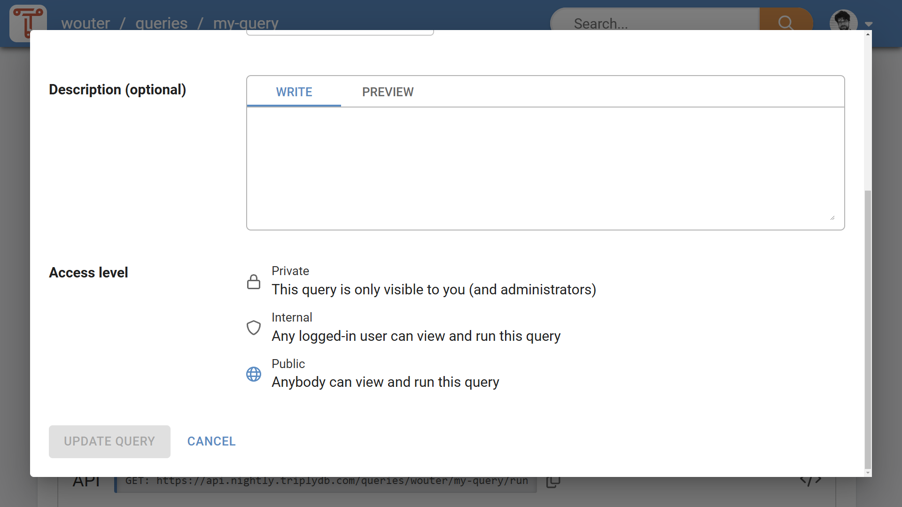
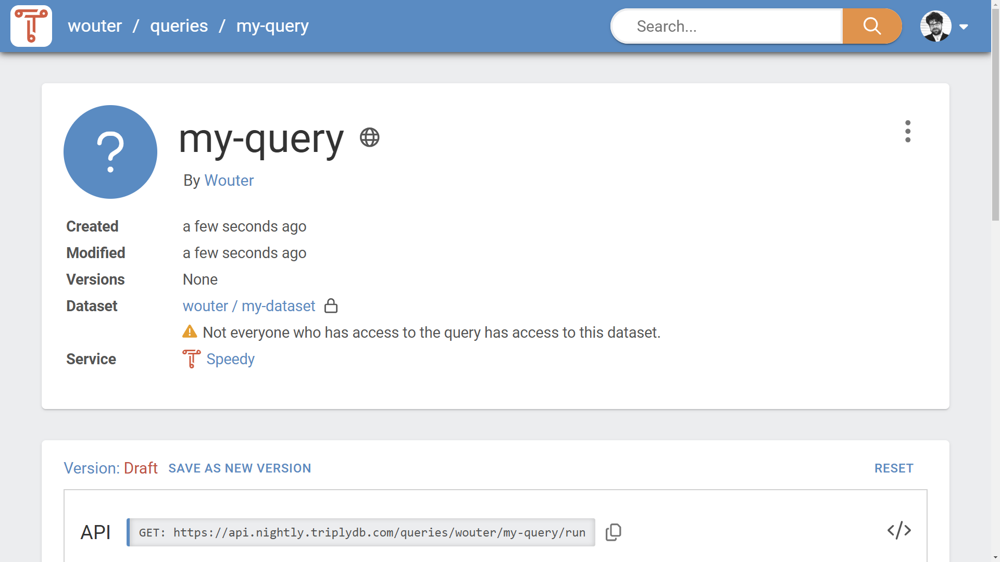

Access Control¶
Read this before you set up a group, invite someone, or publish something. Access control in TriplyDB has two independent parts:
- Access Levels decide who can see something. They apply to the content itself, and they apply to everyone — including people who are not logged in.
- Roles decide what a member of a group may do. They apply only to members of a group, and only ever add to what the Access Level already allows.
| To do this | Go here |
|---|---|
| Change who can see a dataset, query or story | Its settings page, or the create dialog — see Access Levels |
| Change who can see a group | The API or TriplyDB.js — see Access Levels for groups |
| Add someone to a group, or change their role | The group's member settings — see Members |
| Create a role, or change what a role may do | Admin settings → Roles |
| Give a script or pipeline access | API tokens |
What is access-controlled¶
Access Levels can be set on:
- Datasets, including everything at the dataset level: metadata, settings, graphs, and services.
- Queries
- Stories
- Groups
They cannot be set on users. A user account and its metadata are always publicly visible.
Access Levels¶
TriplyDB has three Access Levels. The standard Access Level for new content is always "Private"; an explicit action is needed to make something "Internal" or "Public".
Access level control¶
The Access Level control (see Figure 1) is available on the settings page for datasets, queries, and stories, and on the create dialog for these content types.
Groups behave differently: they are "Public" by default, and their Access Level is set through the API or TriplyDB.js rather than through this control. See Access Levels for groups.

Access Level meaning¶
What an Access Level means depends on whether the content belongs to a user or to a group. For content that belongs to a user:
| Icon | Access Level | Meaning |
|---|---|---|
| Private | Content is only accessible to you. | |
| Internal | Content is accessible to anyone who is logged into the same TriplyDB environment. | |
| Public | Content is accessible to anyone on the Internet. |
For content that belongs to a group:
| Icon | Access Level | Meaning |
|---|---|---|
| Private | Content is only accessible to group members. | |
| Internal | Content is accessible to anyone who is logged into the same TriplyDB environment. | |
| Public | Content is accessible to anyone on the Internet. |
Whatever the Access Level, someone who is not logged in can only ever read. Changing anything requires being logged in, and being allowed to by a role.
Access Levels for groups¶
Next to the Access Levels of the content it owns, a group has an Access Level of its own. It determines who can find the group in the list of accounts and open its page:
| Icon | Access Level | Meaning |
|---|---|---|
| Private | The group is only visible to its members. | |
| Internal | The group is visible to anyone who is logged into the same TriplyDB environment. | |
| Public | The group is visible to anyone on the Internet. |
Unlike datasets, queries, and stories, a newly created group is "Public" by default. A newly created subgroup instead takes the Access Level of its parent group. Changing the Access Level of a group requires the "Manage group" permission.
A group that you are not allowed to see is indistinguishable from a group that does not exist: opening its page gives the same "not found" result. If you are a member of a group nested below it, you do see its name and avatar — its name is part of your own group's name anyway — but not its members, content, or settings.
Two rules that constrain Access Levels¶
Content can never be more accessible than what contains it:
- A group caps the content it owns. The datasets, queries, and stories owned by a group can never be more accessible than the group itself. Making a group stricter therefore fails as long as it still owns content that is more accessible; that content must be changed first.
- A subgroup can never be more accessible than its parent group. Making a parent group stricter fails as long as it still has a more accessible subgroup.
Access Level dependencies¶
The Access Levels of datasets, queries, and stories may affect each other. For example, a public query may use a private dataset. Visitors who are not logged in can then see the query, its metadata, and its query string — but they will never receive query results from the private dataset. Private content stays private.
A warning is shown when a dependency is introduced to content with a stricter Access Level (see Figure 2), so that the Access Levels can be brought into a consistent state.

A typical workflow¶
Access Levels are often used like this:
- A new dataset, query, or story starts out "Private".
- As it progresses, it becomes "Internal", to gather feedback from colleagues.
- Once it is ready, it becomes "Public", publishing it to the world.
Members¶
Roles apply to group members. A personal user account has no members and no roles: you have full control over your own account and everything in it.
Direct and inherited membership¶
Groups can be nested: a group can contain subgroups. Membership is inherited downwards. Adding someone to a group also makes them a member of every subgroup below it, with the same permissions. They do not appear as a member of those subgroups; their access comes from the parent.
Someone can be both an inherited member and a direct member of the same subgroup, with different roles. In that case their permissions are the union of both roles — everything either role allows. Adding someone to a subgroup can therefore only ever grant more; it cannot be used to take something away.
For example, in a group acme with a subgroup acme/research:
- Ada is a
memberofacme. She is also a member ofacme/research, with the same permissions, without appearing in its member list. - Ben is added directly to
acme/researchwith a custom role that only allows writing queries. He is not a member ofacme, so inacmeitself he sees only what its Access Level shows to anyone. - Cleo is a
memberofacmeand is added directly toacme/researchwith Ben's narrower role. Inacme/researchshe keeps everythingmembergives her — the narrower role adds to it rather than replacing it. To reduce what Cleo may do, change her role inacme, or remove her from it.
Requesting access¶
Someone who cannot see a group cannot ask to join it. Give them the group name, or add them yourself.
Roles¶
A role is a named set of permissions. Every member of a group has exactly one role per group they are a direct member of.
System roles¶
Two roles are built in and cannot be changed or deleted:
| Role | Description |
|---|---|
owner |
Full access to everything the group owns and to the group's own settings, including its members. |
member |
Can work with everything the group owns, but cannot manage members and cannot delete the group. |
The difference between them is exactly two permissions: "Manage group" (managing members and roles, and changing the group's Access Level) and "Delete group". Everything else, member already has.
Custom roles¶
When neither system role fits, an administrator can create a custom role with any subset of permissions — for instance a role that may write queries but not touch services, or one that may read everything and change nothing.
Custom roles are created in Admin settings → Roles and assigned in each group's member settings. Each permission in that editor carries a description of what it allows, and the editor is the authoritative list — it is generated from the same definitions the server enforces. What follows is the part of the model the editor cannot tell you.
Every role can always read¶
Two separate rules mean a role can never be narrowed to nothing:
- Every role includes the read permissions. Reading accounts, datasets, queries, and stories is part of every role, including custom ones, and cannot be deselected.
- Access Level grants reads regardless of role. A member is never given less than a visitor who is not a member at all. If content is Public, a member can read it; if it is Internal, any logged-in member can read it — whatever their role says.
So a narrow custom role limits what someone can change, and which parts of the interface they see. It does not limit what they can see below what the Access Level already permits. Use Access Levels for that.
Some permissions gate the interface, not the data¶
A number of permissions control whether a part of the web interface is available — the linked data browser, the table view, the SPARQL IDE, the GraphQL and Elasticsearch editors, the insights dashboard, the graph, service and asset tabs, and the data editor.
These hide interface, not data. Removing "Use SPARQL IDE" from a role removes the query editor from that person's view of a dataset they can read; it does not stop them querying that dataset over the API or with TriplyDB.js. Use them to simplify what a group of users sees, not as a security measure.
Permissions can depend on other permissions¶
Some permissions only mean something together with another: managing services, for example, requires being able to see the services tab. The role editor enforces this, and will tell you when a selection is incomplete.
Personal permissions are not part of any role¶
Managing your own API tokens, configuring multi-factor authentication, deleting your own account, and managing your favourites are always and only yours. They belong to your personal account and cannot be granted to anyone through a role — not even to a group owner.
API tokens¶
Scripts, pipelines and applications authenticate with an API token rather than with a password. A token carries an individually selected set of permissions, following the same model as roles.
Two rules keep tokens from becoming a way around the above:
- A token can never do more than the person who created it. Its permissions are intersected with what its owner is allowed at the time of each request, so it shrinks automatically when its owner's roles do.
- A token cannot manage credentials. Creating or revoking API tokens, changing multi-factor authentication, and deleting an account require a logged-in session, so a token can never be used to mint another token or to widen its own reach.
Give a token the smallest set of permissions that its job needs, and a name that says what uses it — that is what makes it possible to revoke the right one later.
Administrators¶
Administrators of a TriplyDB instance can see and change everything on it, regardless of Access Levels and roles. They are also the ones who create custom roles.
If you need something that no role you can assign allows — a new custom role, a dataset moved between accounts, an account restored — ask your instance administrator.
Common setups¶
A team that publishes data. One group, everyone a member, one or two people owner. Datasets start Private, become Public when ready. The owners are the only ones who can change the group itself.
A group of read-only consumers. A custom role with none of the write permissions selected, assigned to everyone who should only look. Remember that this does not restrict what they can see — set the Access Levels of the content accordingly.
An external collaborator on one dataset. Put that dataset in its own subgroup and add the collaborator there. They get access to that subgroup only; the parent group's other content stays out of reach, provided it is not Public or Internal.
A pipeline that loads data nightly. An API token owned by a member of the group, with the permissions to import data into a dataset and nothing else. Not an owner's token — if the pipeline is compromised, the damage is bounded by what the token may do.